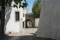
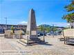
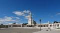
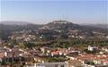

Multimédia
Nesta página pode conhecer alguns dos locais mais emblemáticos de Ourém através de fotografias, vídeo e poesia.
Fotografias | Vídeo | Poesia
Fotografias








Vídeo
Aqui será apresentado um vídeo sobre a cidade de Ourém.
Poesia
Entre colinas se ergue Ourém,
com o seu castelo a contemplar,
histórias antigas que o tempo tem,
e paisagens que nos fazem parar.
De Fátima à serra, há muito para descobrir.